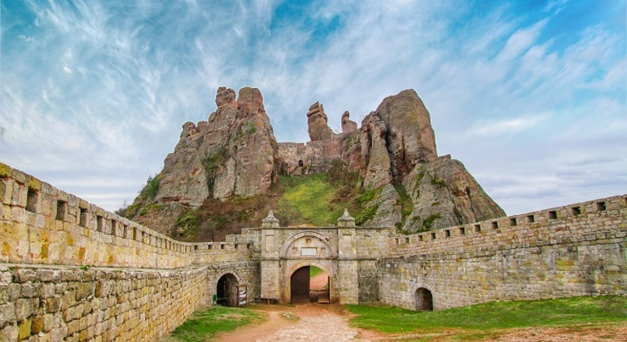

Nemůžeš věřit svému štěstí. Starou španělskou pevnost obývají nějací lidé.
Vypadá to, že si ji jako svou základnu zvolila pirátská flotila kapitána Černovouse.

V pevnosti je tržiště, putyka a citadela.